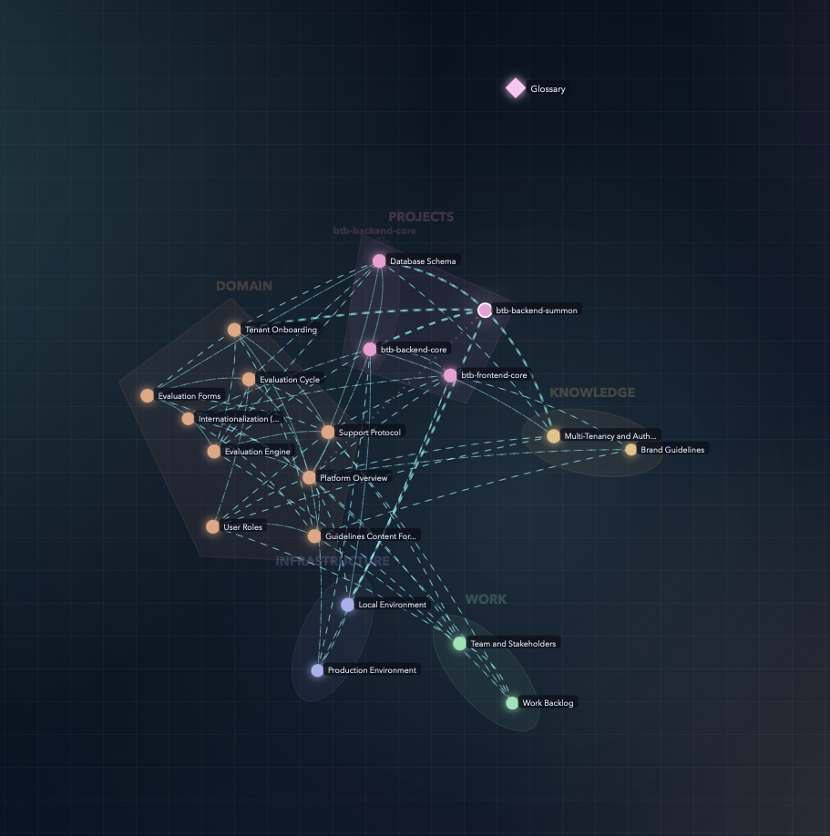

Kluris turns your AI agents into a subject matter expert that never sleeps and never quits — built collaboratively with you, one approved entry at a time.
Customizable brains · Human-curated · Git-backed · Yours forever
The problem
Every new session, every new repo, every new teammate — the knowledge walks out the door. Kluris fixes that.
A new context window means a new brain. Every morning, every session, your agent re-learns your codebase from scratch.
When the senior dev who knows why things are built this way moves on, their context leaves with them. A year later, nobody can explain the auth flow.
Wikis, Notion, and CLAUDE.md are written for people, not agents. They can't be searched, linked, or reasoned across by your AI.
Kluris gives every agent on your team a shared brain they read, search, and grow together.
Step 1
Kluris is a Python CLI distributed on PyPI. Install with pipx — it keeps things isolated and always up to date.
$ brew install pipx $ pipx ensurepath $ pipx install kluris
$ python3 -m pip install --user pipx $ pipx ensurepath $ pipx install kluris
> pip install pipx > pipx ensurepath > pipx install kluris
$ kluris doctor ✓ git found ✓ Python 3.11 found ✓ kluris 1.0.0 ready ✓ 8 agents detected (claude, cursor, windsurf, ...) Everything looks good. You are ready to create a brain.
Step 2
One command, one wizard, one git repo. You pick the name, the type, and the location — kluris does the rest.
$ kluris create acme-brain [1] product-group [2] personal [3] product [4] research [5] blank 1 ~/Projects/acme-brain y y ✓ Created acme-brain ✓ Git initialized on main ✓ Registered as default brain ✓ Installed /kluris skill for 8 agents Next: cd into any project and use /kluris learn this service
acme-brain/ ├── kluris.yml # gitignored — your local config ├── brain.md # root directory, auto-generated ├── glossary.md # domain terms, hand-edited ├── README.md # usage guide ├── .gitignore ├── projects/ │ ├── map.md # lobe index, auto-generated │ └── (your neurons go here) ├── infrastructure/ │ ├── map.md │ └── (your neurons go here) └── knowledge/ ├── map.md └── (your neurons go here)
Every brain is a git repo. Your knowledge is markdown. Nothing is magic.
Anatomy
Seven pieces. Learn them once, use them forever.
The top-level git repo. One brain = one shared knowledge base. You can have many.
A folder inside the brain. Each lobe is a knowledge region — projects, infrastructure, knowledge, tasks, whatever you need.
A single markdown file inside a lobe. One idea, one decision, one runbook, one fact. Named with kebab-case.
A bidirectional link between two neurons. Written in frontmatter as related:. Dream auto-fixes one-way synapses into two-way.
An auto-generated map.md at the root of every lobe. Lists every neuron in the lobe. You never write this — dream writes it.
A single hand-edited glossary.md at the root. Defines your domain vocabulary so agents know what your team words mean.
Your local config for this brain. Gitignored. Contains your git branch preference, your default commit prefix, and which AI agents you use. Each teammate has their own kluris.yml — so everyone can have different settings without touching the shared brain.
name: acme-brain description: platform brains git: default_branch: main commit_prefix: "brain:"
Teach
Three ways to write knowledge into a brain — all collaborative, all reviewed by you before anything is saved.
Point the agent at a folder. It reads your code and proposes neurons one at a time, with a preview of every piece before it is written.
> /kluris learn the auth flow Analyzing src/auth/... (14 files) projects/btb-core/auth-flow.md ────────────────────────────────────── # Auth flow We use Keycloak OIDC. Frontend obtains JWT via Keycloak, passes it to backend as Bearer token. Backend validates via JWKS. Refresh at 80% TTL. [clerk-vs-keycloak.md, jwt-rotation.md] ────────────────────────────────────── [a]pprove [e]dit [s]kip [c]hange lobe:
> /kluris remember we chose raw SQL over JPA for query complexity knowledge/use-raw-sql.md (template: decision) ────────────────────────────────────── # Use raw SQL over JPA Query complexity and performance on the reporting endpoints... Use NamedParameterJdbcTemplate with explicit raw SQL... Less ORM magic, more typing, faster queries, clearer SQL in git diffs. ────────────────────────────────────── [a]pprove [e]dit [s]kip:
For when you just made a call and want to write it down before you forget. The agent turns your one-liner into a properly structured neuron.
When you want full control. Pick a template — decision, incident, or runbook — and get a pre-structured neuron to fill in by hand.
$ kluris neuron outage-jan.md \ --lobe knowledge \ --template incident Created: knowledge/outage-jan.md incident Summary Timeline Root cause Impact Resolution Lessons learned Open it in your editor to fill in the details. Run `kluris dream` to refresh the lobe map afterward.
Ask
Once your brain has knowledge, every agent can use it. Search, query, and implement — all with your team's conventions baked in.
> /kluris search auth flow projects/btb-core/auth-flow.md ★★★ knowledge/jwt-rotation.md ★★ infrastructure/keycloak-setup.md ★ Run `/kluris open auth-flow.md` to read one.
> /kluris what do we know about Docker? Reading: infrastructure/docker-builds.md infrastructure/environments.md You build multi-stage Dockerfiles with BuildKit. Images go to ghcr.io/zeespire/. Prod uses Coolify on Hetzner with Cloudflare Tunnel (zero public ports).
> /kluris implement the POST /users endpoint following our conventions Reading brain: - use-raw-sql.md - api-conventions.md - auth-flow.md Generated endpoint using NamedParameter JdbcTemplate, JWT validation, i18n JSONB fields, explicit constraint names.
> /kluris fix the token refresh -- use brain knowledge Checking brain for auth decisions... knowledge/jwt-rotation.md Conflict: your code refreshes on 401, but the brain says refresh at 80% TTL. Applying the brain's rule.
Operate
wake-up · dream · mri — the rituals of a healthy brain. Run them daily, weekly, or never — your choice.
$ kluris wake-up acme-brain (default) Path: ~/Projects/acme-brain - projects/: 12 neurons - infrastructure/: 4 neurons - knowledge/: 7 neurons 23 2026-04-05 use-raw-sql.md 2026-04-04 auth-flow.md 2026-04-04 docker-builds.md 2026-04-02 state.md 2026-04-01 import.md
$ kluris dream Lobes: projects, infrastructure, knowledge Maps regenerated: 4 OK synapses OK bidirectional OK orphans OK frontmatter OK deprecation 6 automatic fixes applied 3 dates refreshed from git 1 missing parent inferred 2 reverse links added Brain is healthy.
$ kluris mri --open MRI complete — brain-mri.html 23 nodes, 31 edges → opening in browser · search any neuron · hover to see connections · click to inspect content · pan and zoom the graph · filter by lobe Share the HTML — it runs anywhere.

Live output: an actual kluris mri of a real brain. Colors are lobes, dashed cyan lines are synapses, labeled nodes are neurons.
Customize
Brains are not fixed. Add lobes, edit the glossary, write your own templates, deprecate old decisions — all with simple commands.
Your brain evolves with your team. Add a new knowledge region in one command, or nest a sub-lobe inside an existing one.
$ kluris lobe analytics Created: acme-brain/analytics/ $ kluris lobe post-auth \ --parent projects/api/endpoints Created: projects/api/endpoints/post-auth/
Define the vocabulary your team uses in one file. Every agent on your team reads it and stops asking "what does that mean?"
# Glossary **Neuron** — a single knowledge file **Lobe** — a knowledge region folder **Tenant** — a customer company in our multi-tenant SaaS **Protocol** — our psychometric evaluation workflow
Three templates out of the box — decision, incident, runbook. Each one has the right sections so your neurons are consistent.
$ kluris templates decision Context, Decision, Rationale, Alternatives, Consequences incident Summary, Timeline, Root cause, Impact, Resolution, Lessons runbook Purpose, Prerequisites, Steps, Rollback, Contacts
Decisions change. Mark a neuron as deprecated instead of deleting it — history stays, and agents follow the replacement.
--- status: deprecated deprecated_at: 2026-04-01 replaced_by: ./use-clerk.md --- # Kluris dream will surface warnings # for any active links to this neuron.
Switch
A work brain, a personal brain, a team brain you cloned from GitHub — kluris keeps them separate and lets you switch in one command.
$ kluris list acme-brain (default) ~/Projects/acme-brain [git] personal ~/Projects/personal-brain [git] research ~/Projects/research-brain [no git] $ kluris use personal personal ✓ /kluris skill updated for 8 agents $ kluris status personal (personal) Lobes: 3, Neurons: 18 2026-04-05 tasks/today.md 2026-04-04 notes/q2-goals.md $ kluris clone git@github.com:acme/team-brain.git Cloning into ~/Projects/team-brain... ✓ Registered team-brain ✓ /kluris skill updated
Reference
Seventeen CLI commands, plus the /kluris agent patterns. Everything you need, nothing you don't.
| create | Create a brain (interactive wizard) |
| clone <url> | Clone a brain from git |
| list | List registered brains |
| use <name> | Switch the default brain |
| status | Show brain tree and recent changes |
| wake-up | Compact snapshot for agent bootstrap |
| neuron <file> | Create a neuron (--lobe, --template) |
| lobe <name> | Create a lobe (--parent for nesting) |
| dream | Regenerate maps, fix links, validate |
| push | Commit and push brain changes |
| mri | Generate interactive HTML viz |
| templates | List neuron templates |
| install-skills | Install /kluris skill for agents |
| uninstall-skills | Remove /kluris skill |
| remove <name> | Unregister a brain (keeps files) |
| doctor | Check prerequisites |
| help | Show command help |
All CLI commands support --json for machine-readable output.
| /kluris learn <topic> | Agent analyzes code, proposes neurons |
| /kluris remember <fact> | Quick-capture a decision as a neuron |
| /kluris search <term> | Search the brain for a topic |
| /kluris what do we know about ... | Ask the brain a question |
| /kluris implement <task> | Implement following brain conventions |
| /kluris fix <bug> | Fix a bug using brain knowledge |
| /kluris create a decision | Create a decision record neuron |
| /kluris create an incident | Create an incident report neuron |
| /kluris create a runbook | Create a runbook neuron |
| /kluris open <file> | Open a neuron and read it |
| /kluris deprecate <file> | Mark a neuron as deprecated |
Agent patterns are free-form — say it naturally. The agent picks the template.
Two commands. Free forever. Works with every AI agent on your team.
MIT licensed · Python 3.10+ · Works offline · All data is yours
Works with every agent on your team